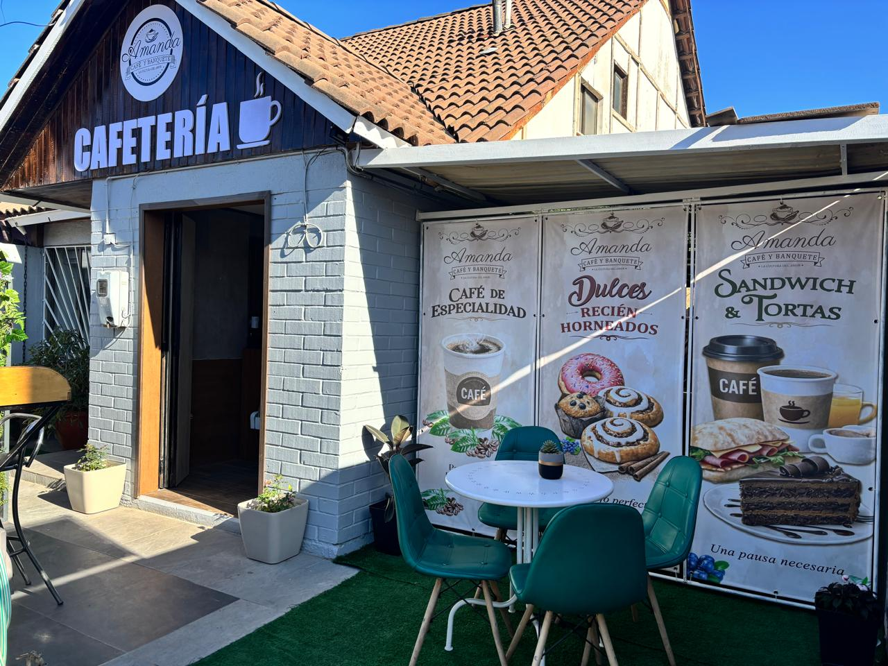
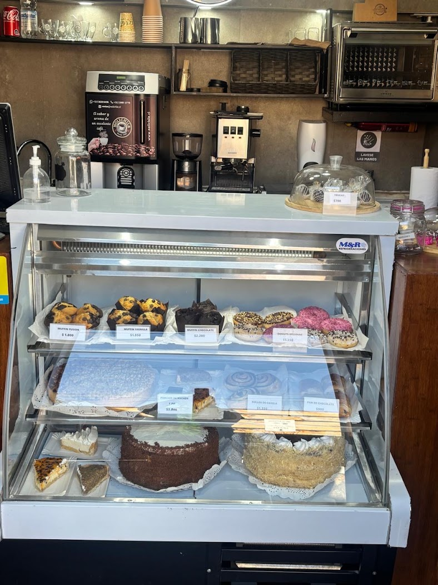
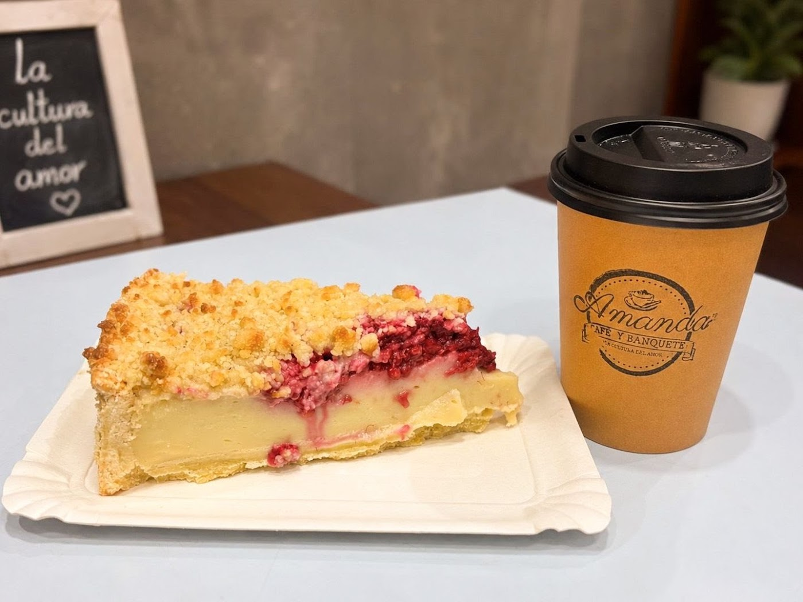
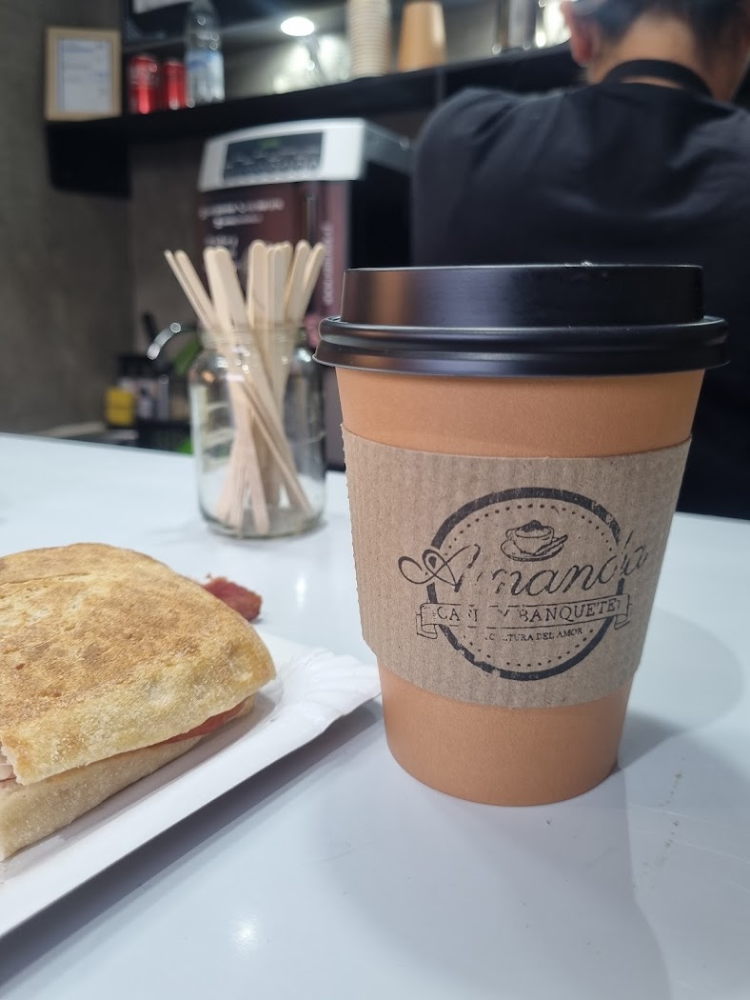

Café de especialidad
"El café exquisito", "pero el café, uff uff uff, ¡una delicia!" — citas textuales de sus reseñas reales.

Café de especialidad · Pastelería · Maipú
Café de especialidad, dulces recién horneados, sándwiches y tortas en Lago Castelgandolfo 18807, Maipú.
Es lo que dice su propio logo, y se nota en cómo atienden: las tres reseñas de Google destacan la atención antes que cualquier otra cosa.
"El café exquisito", "pero el café, uff uff uff, ¡una delicia!" — citas textuales de sus reseñas reales.
Muffins, donuts rellenas, rollos de canela y pan de chocolate, en vitrina todos los días.
Tortas frescas por porción o enteras, kuchen, pie y sándwiches para llevar.
Amanda Café y Banquete es una cafetería de barrio en Maipú: café de especialidad, vitrina de dulces horneados el mismo día y una terraza chica con mesas afuera para sentarse un rato.
Con 4.6 estrellas en Google, lo que más repiten quienes la visitan es la atención y el café. Su propio logo lo resume: "la cultura del amor".



Productos reales de su vitrina. Arma tu pedido y consulta los precios del día directamente en el local.
"¡Una experiencia completa! Excelente atención, un ambiente acogedor, el café exquisito, las tortas muy frescas y sabrosas. Sin duda un lugar totalmente recomendable, ¡un 10 de 10!"
"¡Cafetería de calidad! Los pasteles riquísimos... pero el café, uff uff uff, ¡una delicia! Gracias por su excelente atención."
"Excelente café y pastelitos para endulzar el día y, por supuesto, con la mejor atención. ¡Me encanta! Lo recomiendo 1000%."
Lago Castelgandolfo 18807
Maipú, Región Metropolitana
—
Horario completo por confirmar con el local.